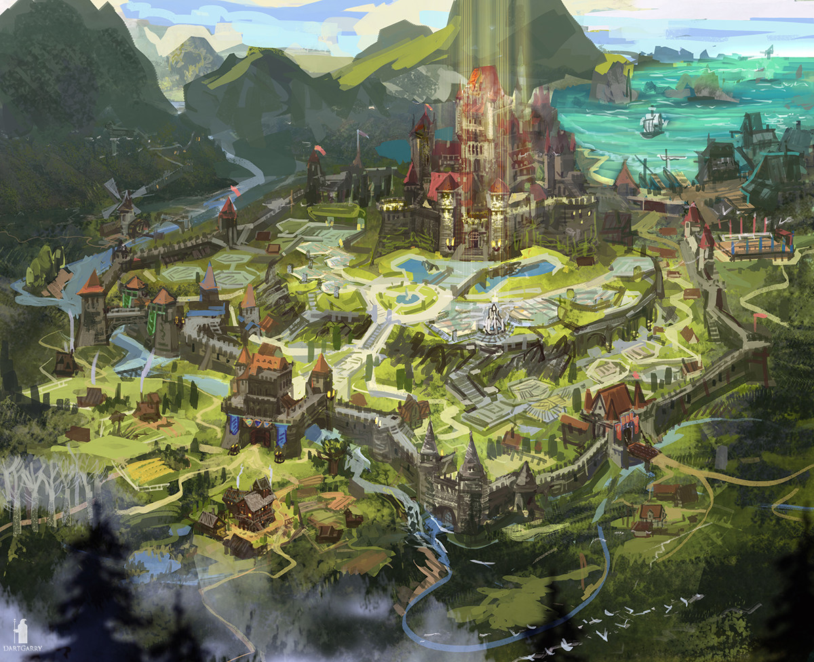

👑 Королевство Эрдуин
Жемчужина земель

Население: Около 1–1,5 млн. человек
Правители: Король Виконт Джулиасто Ксандрей Ван Дер Харвер 12 и королева Сильвия Жандо Ксандрей
Описание
Королевство людей — «Эрдуин». Сияющее государство под мудрым правлением короля Виконта и королевы Сильвии. Белокаменные города, золотые купола и плодородные равнины делают его жемчужиной земель.
История и Уклад
Здесь нет запретов на религию и расу: эльфы, гномы, орки и другие существа живут бок о бок с людьми, находя дом и свободу. Эрдуин — символ единства в многообразии, где величие правителей измеряется счастьем народа.
Достопримечательности
- Сад Мироздания — общий храмовый парк с фонтанами и статуями божеств всех пантеонов.
- Университет Эрдуина — древняя библиотека, где бок о бок учатся магии, науке и общей истории континента Лэстрэла.
- Замок Двух Корон — белокаменная резиденция Виконта и Сильвии с Залом Открытых Врат, где принимают послов всех рас.
- Многоязычный Рынок — торговая площадь, знаменитая экзотическими товарами со всего мира.